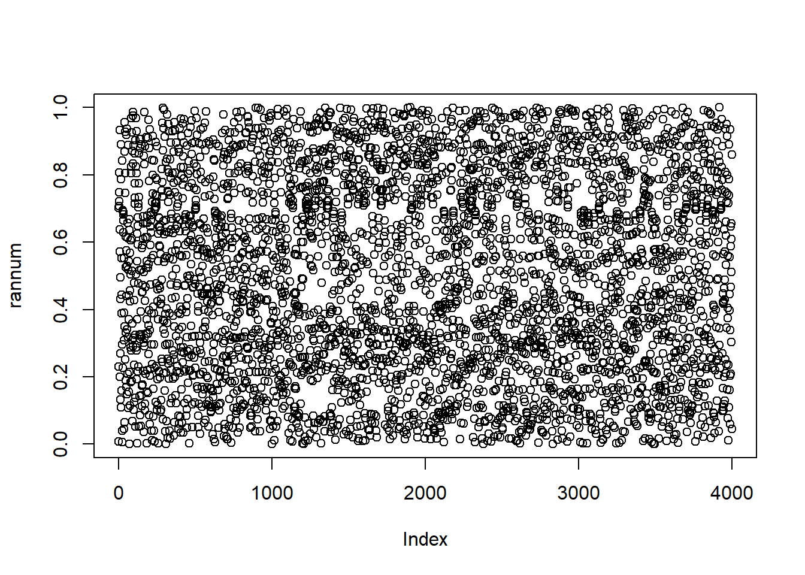
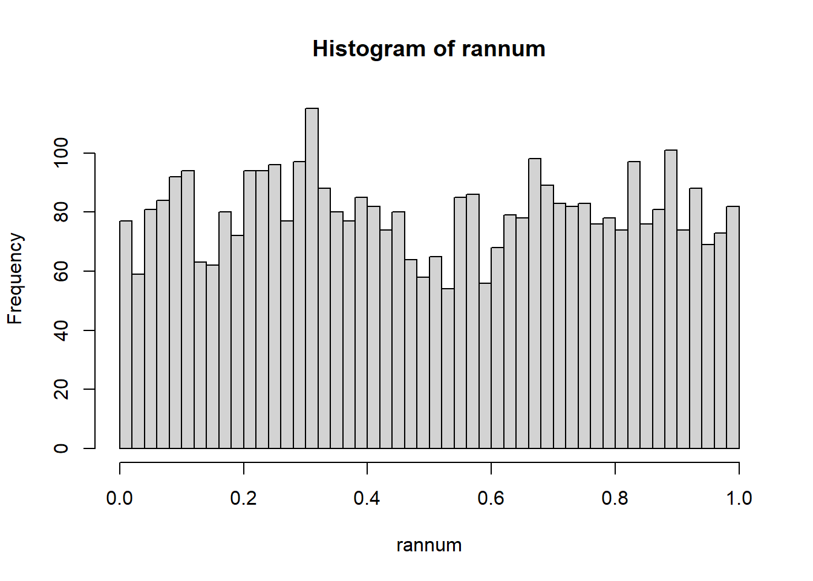
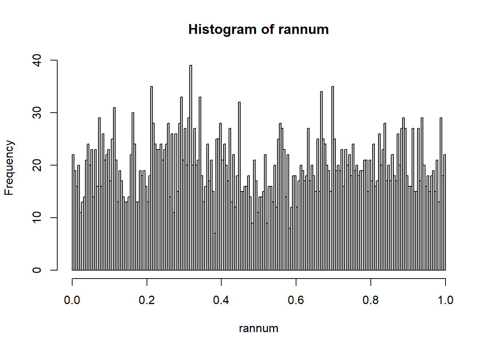
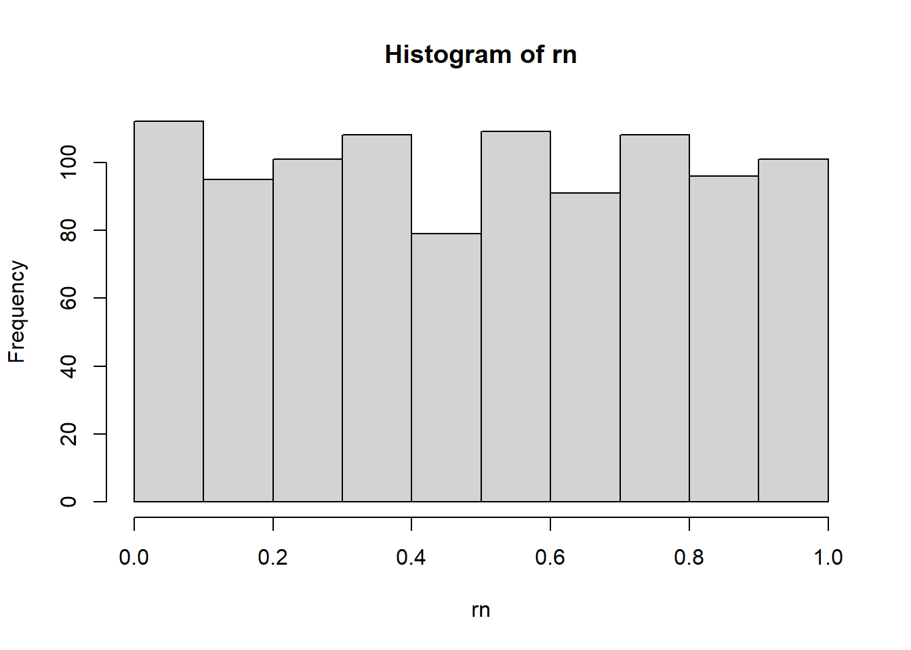
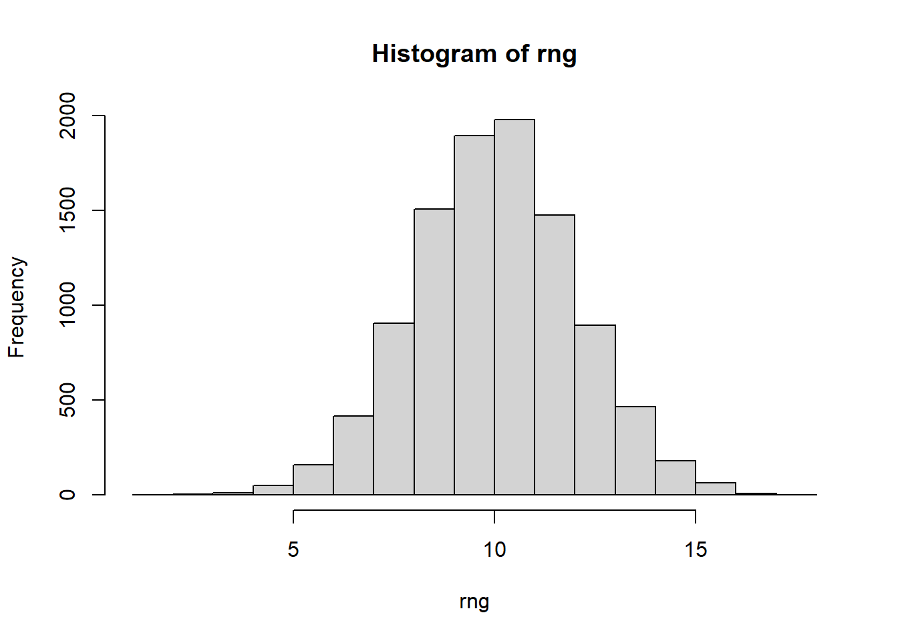
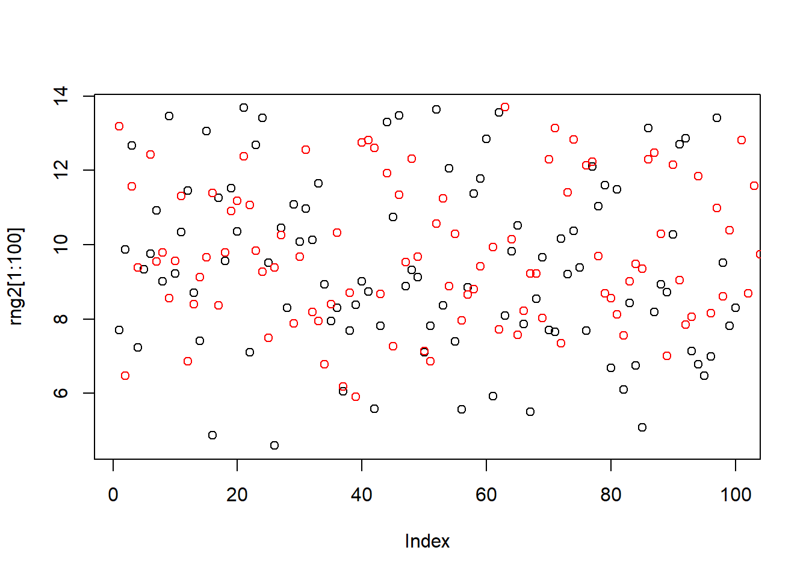
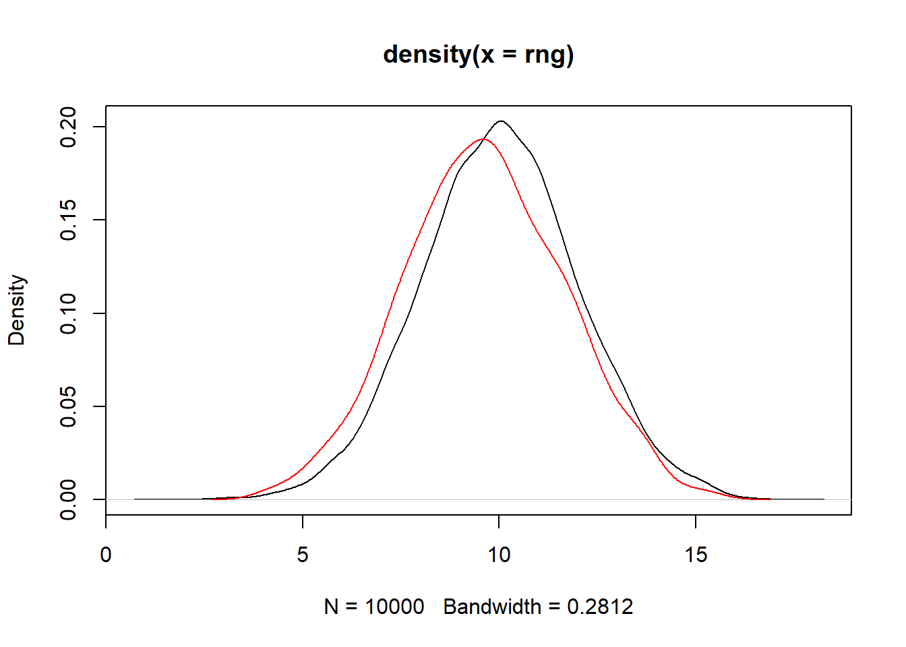

This Quarto document explores pseudo-random number generation (PRNG) and related distributions in R, relevant for simulations in bioinformatics such as modeling biological variability or Monte Carlo methods. We generate sequences, analyze properties like mean, variance, and entropy, and compare distributions using built-in R functions.
2 Pseudo-Random Number Generation (PRNG)
PRNG uses a deterministic algorithm to produce sequences that mimic randomness. Here, a linear congruential generator is implemented with parameters: starting point (xs), multiplier (mul), and drift (dri).
Code
nn <-4000# number of sequence# starting pointxs <-1/123# initial seed value# multiplier mul <-2.132# scaling factor# drift dri <-0.212134# additive constant# vector for random numbers and initiation rannum <-rep(0, nn)rannum[1] <- xs# loop to generate RNfor (i in2:nn) { rannum[i] <- (mul * rannum[i-1] + dri) %%1}
3 Visualizing the Generated Numbers
Plot the sequence to inspect randomness visually. A uniform scatter suggests good randomness.
Code
plot(rannum)

Plot consecutive pairs to check for dependencies or patterns (e.g., correlations).
Histograms reveal the distribution. For uniform PRNG, it should be flat across [0,1).
Code
hist(rannum, breaks =60) # histogram

Detailed histogram for further properties.
Code
disr <-hist(rannum, breaks =250) # properties of histogram

5 Statistical Properties
Check mean (expected ~0.5 for uniform [0,1)) and variance (expected ~1/12).
Code
mean(rannum) # average (to be 0.5 - see lecture)
[1] 0.4995062
Code
sd(rannum)^2# variance (to be 1/12 - see lecture)
[1] 0.08373041
6 Entropy Calculation
Entropy measures information or uncertainty. For discrete bins, compute Shannon entropy.
Code
# calculate entropy and averageent <-0danv <-0for (i in1:length(disr$counts)) { ptemp <- disr$counts[i] / nn ent <- ent - ptemp *log2(ptemp) danv <- danv + ptemp * disr$mids[i] # the mids are the x}print(ent) # depends on binning
[1] 7.587938
Code
print(danv)
[1] 0.4994775
Note: For uniform distribution, analytical entropy is log(b-a) = 0, but binning affects computation.
7 Differential Entropy
For continuous distributions, adjust for bin width in entropy calculation.
Compare distributions using non-parametric (Wilcoxon) and parametric (t-test) tests.
Code
wilcox.test(rng, rn)
Wilcoxon rank sum test with continuity correction
data: rng and rn
W = 1e+07, p-value < 2.2e-16
alternative hypothesis: true location shift is not equal to 0
Code
t.test(rng, rne) # assumes normality
Welch Two Sample t-test
data: rng and rne
t = 221.9, df = 1732.7, p-value < 2.2e-16
alternative hypothesis: true difference in means is not equal to 0
95 percent confidence interval:
8.906799 9.065656
sample estimates:
mean of x mean of y
10.021079 1.034851
Histograms for visual comparison.
Code
hist(rn)

Code
hist(rng)

Code
hist(rne)
14 Reproducibility with set.seed
Set seed for identical results across runs.
Code
set.seed(2)rng2 <-rnorm(1000, mean =9.5, sd =2)plot(rng2[1:100])points(rng, col ="red")

Densities.
Code
plot(density(rng))lines(density(rng2), col ="red")

Tests with full and subsamples.
Code
wilcox.test(rng, rng2)
Wilcoxon rank sum test with continuity correction
data: rng and rng2
W = 5562771, p-value = 4.161e-09
alternative hypothesis: true location shift is not equal to 0
Code
wilcox.test(rng[1:120], rng2[1:120]) # significance depends on sample size
Wilcoxon rank sum test with continuity correction
data: rng[1:120] and rng2[1:120]
W = 7947, p-value = 0.1651
alternative hypothesis: true location shift is not equal to 0
Code
t.test(rng, rng2)
Welch Two Sample t-test
data: rng and rng2
t = 5.9051, df = 1201.9, p-value = 4.58e-09
alternative hypothesis: true difference in means is not equal to 0
95 percent confidence interval:
0.2651541 0.5290095
sample estimates:
mean of x mean of y
10.021079 9.623997
Code
t.test(rng[1:120], rng2[1:120])
Welch Two Sample t-test
data: rng[1:120] and rng2[1:120]
t = 1.7228, df = 237.88, p-value = 0.08623
alternative hypothesis: true difference in means is not equal to 0
95 percent confidence interval:
-0.0714313 1.0670960
sample estimates:
mean of x mean of y
10.061799 9.563967
Source Code
---title: "Playing with Random Numbers"author: "Based on script by Alexander Skupin"date: "2025-10-21"format: html: toc: true toc-location: left toc-title: "Table of Contents" code-fold: true code-tools: true theme: cosmo css: styles.css number-sections: truemessage: false---## IntroductionThis Quarto document explores pseudo-random number generation (PRNG) and related distributions in R, relevant for simulations in bioinformatics such as modeling biological variability or Monte Carlo methods. We generate sequences, analyze properties like mean, variance, and entropy, and compare distributions using built-in R functions.## Pseudo-Random Number Generation (PRNG)PRNG uses a deterministic algorithm to produce sequences that mimic randomness. Here, a linear congruential generator is implemented with parameters: starting point (xs), multiplier (mul), and drift (dri).```{r}nn <-4000# number of sequence# starting pointxs <-1/123# initial seed value# multiplier mul <-2.132# scaling factor# drift dri <-0.212134# additive constant# vector for random numbers and initiation rannum <-rep(0, nn)rannum[1] <- xs# loop to generate RNfor (i in2:nn) { rannum[i] <- (mul * rannum[i-1] + dri) %%1}```## Visualizing the Generated NumbersPlot the sequence to inspect randomness visually. A uniform scatter suggests good randomness.```{r}plot(rannum)```Plot consecutive pairs to check for dependencies or patterns (e.g., correlations).```{r}plot(rannum[1:(nn-1)], rannum[2:nn]) # plot dependencies```## Histogram AnalysisHistograms reveal the distribution. For uniform PRNG, it should be flat across [0,1).```{r}hist(rannum, breaks =60) # histogram```Detailed histogram for further properties.```{r}disr <-hist(rannum, breaks =250) # properties of histogram```## Statistical PropertiesCheck mean (expected ~0.5 for uniform [0,1)) and variance (expected ~1/12).```{r}mean(rannum) # average (to be 0.5 - see lecture)sd(rannum)^2# variance (to be 1/12 - see lecture)```## Entropy CalculationEntropy measures information or uncertainty. For discrete bins, compute Shannon entropy.```{r}# calculate entropy and averageent <-0danv <-0for (i in1:length(disr$counts)) { ptemp <- disr$counts[i] / nn ent <- ent - ptemp *log2(ptemp) danv <- danv + ptemp * disr$mids[i] # the mids are the x}print(ent) # depends on binningprint(danv)```Note: For uniform distribution, analytical entropy is log(b-a) = 0, but binning affects computation.## Differential EntropyFor continuous distributions, adjust for bin width in entropy calculation.```{r}# calculate differential entropynbis <-500ddisr <-hist(rannum, breaks = nbis) # properties of histogramdent <-0for (i in1:length(ddisr$counts)) { ptemp <- ddisr$counts[i] / nn / nbis # note: adjusted for bin width (1/nbis assuming range 1)if (ptemp >0) { dent <- dent - ptemp *log2(ptemp) }}print(dent) # depends on binning```## Exponential Distribution via Inverse SamplingTransform uniform to exponential using inverse CDF: -λ log(u), where u ~ Uniform[0,1).```{r}lambda <-1# rate parameterexpran <--lambda *log(rannum) # inverse function of exponentialexpden <-hist(expran, breaks =500, freq =FALSE)```Check normalization and statistics.```{r}sum(expden$counts) / nn # check if normalizedsum(expden$counts * expden$mids) / nn # average by distributionmean(expran) # average of numberssd(expran) # standard deviation```## Uniform Random Numbers with R's runifR's built-in uniform generator for reproducibility and efficiency.```{r}runif(10) # generate 10 uniform numbers```Plot sequence.```{r}plot(runif(1000))```Mean of large sample.```{r}mean(runif(100000))```Dependencies and histogram.```{r}rn <-runif(1000)plot(rn[1:999], rn[2:1000])rnhist <-hist(rn, breaks =30)```Normalized histogram and density.```{r}sum(rnhist$counts /1000) # check if normalizedbarplot(rnhist$counts /1000) # plot normalized histogramplot(density(rn))```Effect of binning.```{r}rnhist <-hist(rn, breaks =100)rnhist <-hist(rn, breaks =30)```## Scaled Uniform and Sum of UniformsScale uniform and sum two for triangular distribution (like sum of dice).```{r}rn2 <-2*runif(1000)plot(rn[1:100], ylim =c(0, 2))points(rn2, col ="red")```Densities.```{r}plot(density(rn), xlim =c(0, 3))lines(density(rn2), col ="red")```Sum.```{r}rnsum <- rn + rn2hist(rnsum)plot(density(rnsum), ylim =c(0, 2))```Compare densities.```{r}plot(density(rn), ylim =c(0, 2), xlim =c(0, 4))lines(density(rn2), col ="red")lines(density(rnsum), col ="blue")```## Exponential with runifDirect generation.```{r}hist(-log(runif(100000)))plot(density(-log(runif(1000000))))```As vector.```{r}rne <--log(runif(1000))rnehist <-hist(rne)sum(rnehist$counts /1000) # check if normalizedbarplot(rnehist$counts /1000) # plot normalized histogram```## Gaussian Random Numbers with rnormNormal distribution, common in bioinformatics for noise or measurements.```{r}rng <-rnorm(10000, mean =10, sd =2) # with mean 10 and sd 2plot(rng[1:1000])rnghist <-hist(rng)sum(rnghist$counts /10000) # check if normalizedbarplot(rnghist$counts /10000) # plot normalized histogram```## Significance TestsCompare distributions using non-parametric (Wilcoxon) and parametric (t-test) tests.```{r}wilcox.test(rng, rn)t.test(rng, rne) # assumes normality```Histograms for visual comparison.```{r}hist(rn)hist(rng)hist(rne)```## Reproducibility with set.seedSet seed for identical results across runs.```{r}set.seed(2)rng2 <-rnorm(1000, mean =9.5, sd =2)plot(rng2[1:100])points(rng, col ="red")```Densities.```{r}plot(density(rng))lines(density(rng2), col ="red")```Tests with full and subsamples.```{r}wilcox.test(rng, rng2)wilcox.test(rng[1:120], rng2[1:120]) # significance depends on sample sizet.test(rng, rng2)t.test(rng[1:120], rng2[1:120])```